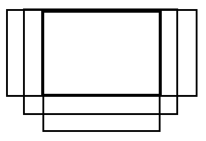

T1 高精度
题解
考虑在第$i$次操作中加入的数$x$对第$j$次操作之后的数的贡献。如果在第$i$次操作之后，数的位数为$len_i$，在第$j$次操作之后，数的位数为$len_j$，那么贡献为$x\times 10^{len_j-len_i}$。
但此时我们默认$x$这个数直到第$j$次操作结束都没有被删去，如果它在中间的某次操作中被删去了，那么这个贡献显然是错误的。
考虑用减操作抵消这个数在被删去之后对整个数的影响，对于每次减操作我们记录一下它删去了哪个数，假设为$x$，那么我们将这个位置的权值看作$-x$，对$j$操作之后数的贡献为$-x\times 10^{len_j-len_i+1}$。
现在我们就可以无视掉“在中间的某次操作中被删去”这种情况了，考虑CDQ分治，即计算左区间的操作对右区间的数的影响。这是一个差卷积的形式。
另一种做法是使用有根点分治。观察到所有的操作形成了一棵树型的结构，因此可以直接点分治。每次提出分治中心到根的路径，再用NTT计算这条路径到其它子树的贡献。
代码如下
1 |
|
T2 最短路
题解
首先有结论：假设只走白边，从起点走到终点至少要经过$k$条边，那么可能的路径只有三种情况：
- 全是白边，长度为$ka$。
- 有$k\bmod 2$条白边，$\lfloor\frac k2\rfloor$条黑边。
- 全是黑边。
第三种路径不一定存在，但第二种路径一定存在，因为每次我们可以将最终路径中相邻的两条白边缩成一条黑边。如果这两条白边在同一个三元环上，那么这样走一定不优秀，即只走白边，从起点到终点的最短路径一定比这条路径短。
接下来我们只需要考虑第三种情况，即求出从起点开始，只走黑边，到其它每个点的最短路。
看起来只能暴力，即遍历当前点的所有出边，再依次遍历这条边的另一个端点$u$的所有出边，假设这条边到达$v$，再判断当前点到$v$是否有连边。很显然，这样的复杂度是不低于$n^2$的，会被菊花图卡飞。
考虑这样一种优化：我们用BFS来求到每个点的最短路。如果到$u$的最短路已经计算好了，那么所有到$u$的出边就都没用了，我们一定不会再用到这些边。
因此，记录一张新图$G’$，在这张图上，我们仅保留所有目标点没有被计算的边，在BFS枚举$v$时，我们在这张新图上枚举出边。
每次加边时，意味着有一个三元环被缩掉了。由于三元环的总数为$m\sqrt m$，因此总时间复杂度为$O(n+m\sqrt m)$。
代码如下
1 |
|
T3 网格图
题解
显然最后的黑点一定形成了若干个矩形，且任意两个矩形中最近点的欧几里得距离大于$2$。
本质上来讲，我们在维护这样一个过程：一开始每个黑点都是一个$1\times 1$的矩形，接着我们不断合并这些矩形。如果存在两个矩形使得最近点的欧几里得距离小于等于$2$，那么我们就合并这两个矩形。
将所有点按照$y$坐标排序，枚举待合并的矩形，尝试将其与之前$y$坐标小于它的矩形合并，可以发现可以合并的矩形只有三种：

因此我们需要维护的是，所有$x$坐标与$[l,r]$有交的矩形中，$y$坐标最大，且没有被删除的（我们将合并视为删去另一个矩形，并扩大当前矩形）。
由于我们将所有点按照$y$坐标排好了序，因此每次插入新的矩形时，$y$坐标一定是递增的，使用线段树套vector即可。
由于要标记永久化，因此对于线段树上的每个节点，我们需要记录两个信息：完全包含这个区间的矩形以及被这个区间完全包含的矩形。
代码如下
1 |
|